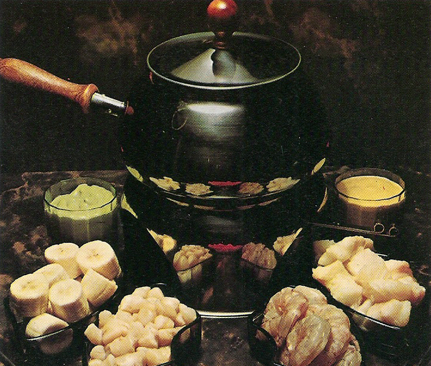

SEAFOOD FONDUE

Savor a seafood fondue—melted cheeses and fresh seafood. Dip shrimp,
scallops, and fish in a bubbling pot of flavor infused with garlic, herbs,
and white wine. Perfect for sharing unforgettable moments
INGREDIENTS
- 1/2 lb salmon steak
- 1/2 lb halibut steak
- 3/4 lb raw medium-size shrimp
- 1/2 lb scallops
- 3/4 cup butter
- 1 1/2 cups salad oil
- 2 bananas
- 2 tablespoons lemon juice
AVACADO SAUCE
- 1 large avocado
- 5 drops Tabasco
- 1 1/2 tablespoons lemon juice
CHUTNEY SAUCE
- 1 cup dairy sour cream
- 1 to 1 1/2 teaspoons curry powder
- 1/3 cup chutney
STEPS
- Cut salmon and halibut into 3/4 inch cubes; discard skin and bones.
Peel and devein shrimp. Cut scallops into quarters
- Arrange fish and shellfish in separate groups on tray. Cover with
transparent plastic film. Refrigerate until serving time
- Prepare Avocado Sauce: Peel avocado and chop coarsely. Combine avocado,
Tabasco, and lemon juice in container of electric blender, and blend
until smooth. Spoon into small bowl, and refrigerate, covered, until
serving
- Prepare Chutney Sauce: Combine sour cream, curry powder, and chutney in
container of electric blender, and blend until smooth. Spook into small
bowl, and refrigerate, covered, until serving
- At serving time, heat butter and oil in fondue pot over alcohol burner,
until it starts to bubble
- Cut bananas crosswise into 1-inch slices, and sprinkle with lemon juice.
Place on tray with fish
- To serve: Each person spears pieces of fish or banana with fondue fork
and dips into bubbling fat. Fish is done when edges are slightly brown.
Serve with sauces. Makes 4 to 6 servings